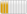

De: La Frikipedia, la enciclopedia extremadamente seria.
De: La Frikipedia, la enciclopedia extremadamente seria. De: La Frikipedia, la enciclopedia extremadamente seria.
| Adoptado |  | |
|---|---|---|
| Este artículo fue adoptado por [[Usuario:{{{1}}}|{{{1}}}]], así que no lo toques porque sino este gatito se enojará contigo. | ||
Cuando adoptes un artículo ponle {{Adoptado|IP anónima}} para que nadie te lo toque.
Una vez que termines de mejorarlo y lo presentes en Proyecto:Adopción/Propuestos/Actual, reemplázala por {{Participante Adopción}}, de lo contrario a los 30 días sin ediciones se le declarará abandonado.
Autor(es):